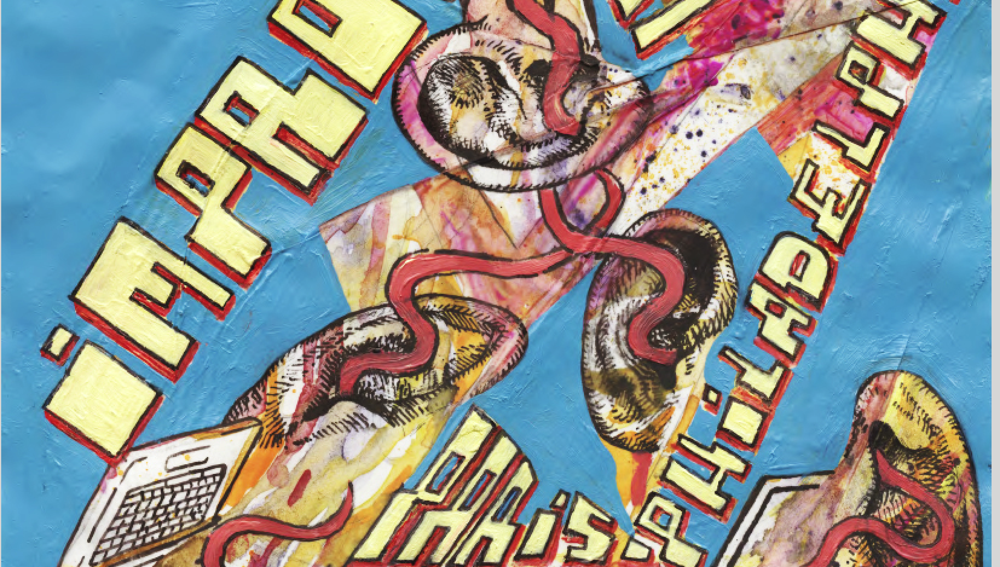

The ImproTech series
In 2004 was held at ircam, during the 1st Sound and Music Computing Conference, a workshop on Improvisation and the Computer, that gathered the cream of musicians and researchers operating in the field. The event was a great success and it had a strong impact on the public, the musical scene - and on Ircam as well, by introducing there, for the first time at the highest level, improvisation as a major research topic and a respected field of investigation. Above all, it was a wonderful opportunity to share an exceptional artistic and scientific moment. A trace of this moment is the DVD Contact that captures the performance by David Wessel and Roscoe Mitchell, a founding member of the Art Ensemble of Chicago.

In 2012, the idea of renewing the experience came up, this time in NYC, where many of the former participants came from, emerged more than once in passionate discussions about the present state of Improvisation involving digital technologies and media. The ImproTech Paris - NYC 2012 workshop was dedicated to the exploration of contemporary bounds between musical improvisation and intelligent digital technologies. Gathering researchers and artists from both research & creation scenes, it favored the idea of using digital intelligence as a source of inspired and sophisticated creation, in a complex, creative interaction of machines with live musicians, as opposed to mere decorative electonic effects. With such venues as NYU, Columbia University and The Roulette concert hall, IK Paris-NY featured improvisation world stars s.a. Geri Allen, Steve Coleman, Roscoe Mitchell, Vijay Iyer or Bernard Lubat.

Now is the time five years later to renew with the ImproTech workshop - festival formula, and measure the technological, aesthetical, and sociological evolutions since the last gathering. The meeting place is this time in Philadelphia which seems a natural destination after NYC, for its unique improvised music scene and history, and its perpetual enchantment with the ever floating figures of Coltrane, Sun Ra, or McCoy Tyner.
ImproTech Paris - Philly will take place at University of Pennsylvania, with concerts at The Rotunda and the Annenberg Center, and musical events at the ICA. Scholars, students, musician, makers will come from all places in europe and the US to talk about their work, demo, teach and perform. IK Paris-Philly will flourish on the explosive encounter of prominent research labs researchers, well established musical figures of Jazz and contemporary music, and the young avant-garde / underground scene of Philadelphia and surroundings.